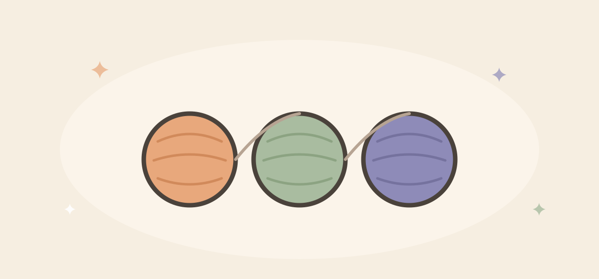

It started with one skein of yarn
and one very opinionated cat
Purrlight Studio is a small family studio in Pearland, Texas, making soft things that are meant to be kept.

From a kitchen table in Texas
Purrlight Studio didn’t begin as a business plan. It began with a crochet hook, a skein of soft cotton yarn, and evenings at the kitchen table — making little dolls for the people we love, while our cat supervised every stitch from the windowsill.
Friends asked for one. Then friends of friends. Then, one day, a stranger on the internet — and that was the moment Purrlight Studio became real.
Two homes, one pair of hands after another
Our story stretches between two places. Every piece is designed here in Pearland, Texas. And each one is brought to life in small batches by our family of artisan makers in Vietnam — skilled hands that have been crocheting and sewing for decades, paid fairly and never rushed.
We say “made slowly, with love” because it’s literally true: a single doll can take hours of stitching. We think you can feel that when you hold one.
Why “Purrlight”?
Cats find the warmest, softest spot in every room — and then make it warmer just by being there. That small glow is what we chase in everything we make. If a Purrlight piece makes someone’s shelf, stroller, or key ring a little warmer, we’ve done our job.
What we believe
Small batches over mass production. Keepsakes over clutter. Materials chosen for small hands and curious paws. And honest craft — when something is made to order, we say so, and when it takes three weeks, that’s because hands are not machines.
— The Purrlight family, and the cat who started it all